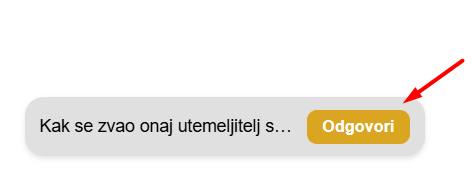
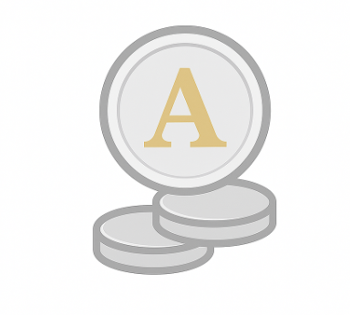
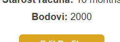

Ovaj dio stranice je namijenjen za odgovaranje i postavjanje pitanja od drugih korisnika ove stranice. Pitanja nisu vezana za jednu specifičnu temu, već možeju biti raznih narava. Ideja ovog je bila da ljudi možeju potražiti pomoć od drugih.. i da će drugi onda pomoći, kao što i samo širenje dobra. Također, nudimo i sakupljanje bodova pomaganjem, tako da kad netko odgovori na pitanje dobije bodove koje će u budućnosti moći prenijeti u oblik pravog novca (za detalje pogledaj "O bodovima i novcu") ..dopustite da vam pokušamo objasniti ukratko putem samo nekoliko slika ispod...



Nadamo se da je pomoglo u shvaćanju.. a sad, želimo naglasiti da ti bodovi, niti odgovaranje na pitanja ili postavljanje pitanja nije ni u kojem obliku rizično/sklono opasnosti od strane nas. Voditelji stranice ne uzimaju nikakve osobne podatke, osim onih koje ste dali za neku svrhu (prijava ili slično). Bankovni podaci se nikad ne uzimaju. Za svako postavljeno pitanje na stranici, bilo vaše ili tuđe..stisnite na " SVA PITANJA" na početnoj stranici.
1. Stisni na "Odgovori"..te odgovori na postavljeno pitanje..
2. Pridobi bodove..i to je to..bodovi se bilježe na vašem profilu... (pogledaj profil)
Bodovi koje imate na profilu su trenutno bezvrijedni, naime planiramo omogućiti da postanu vrijedni u skoroj budućnosoti. Broj korisnika je važan, kad govorimo o tome..puno korisnika znači puno više prilika..bez toga uvjeta nema i bodova koji bi vrijedili nešto. Bodovi bi se mogli prenijeti u novčani oblik koji bi podigli isključivo(za sad) na Pay-Pal-u.
Davanje bankovnih podataka, kao i-ban i slično nije potrebno.